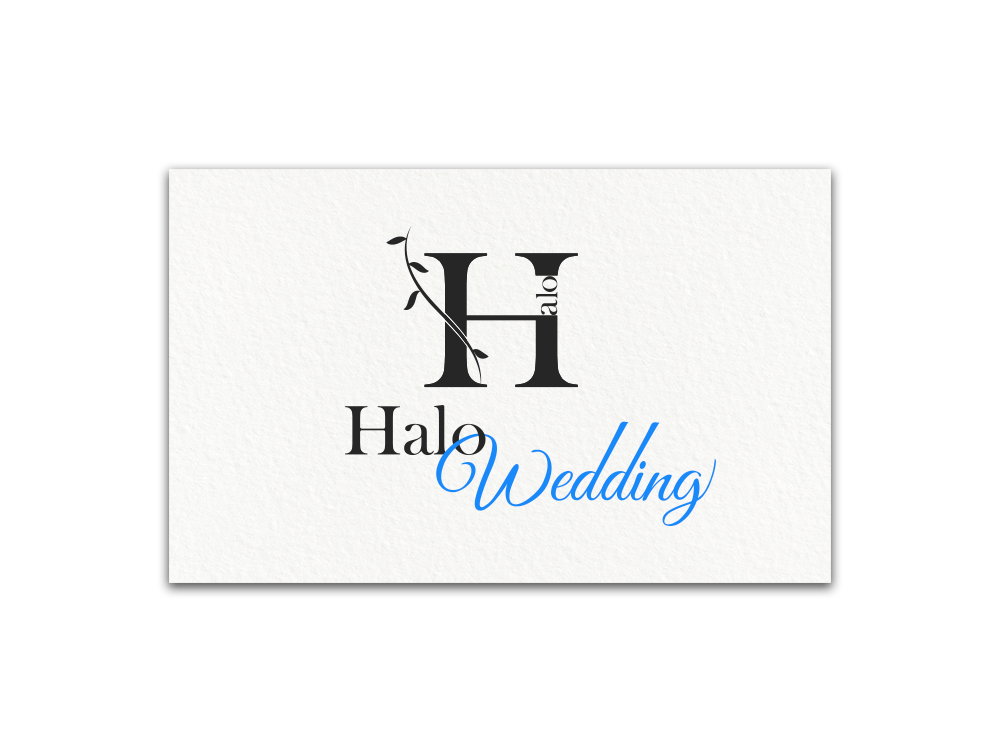

ウェディンググッズ
販売会社様 ロゴ
ロゴデザイン（コンペ作品）

- 概要
-
結婚式で使用する結婚証明書やメモリアルグッズを販売しているHalo Wedding様のロゴデザインコンペに出す為、作成しました。
実際にCloud Worksで採用していただいた作品になります。
- ターゲット層
- これから結婚式を挙げる予定で、SNSを用いてウェディンググッズを検討している20-30代の男女
- 目的・ゴール
- 商品のイメージに合うロゴを作成し、SNS等で興味を持ってもらいブランドの認知度を向上する。
- 制作ポイント
- 今後の新しい人生の門出にウェディングアイテムで寄り添うイメージを巻き付く葉に思いを込めました。
シンボルは『Halo』のHをモチーフにし、SNS等の小さなアイコンでも目につくようシンプルながら印象に残る高級感のあるデザインを心がけました。
また、花嫁様のサムシングブルーを意識した色を使用し、大切な結婚式に心強く、寄り添ってくれるような大切なおまじないのようなウェディンググッズであることをイメージしました。
- 制作期間
- 2時間
- 使用ツール
- illustrator